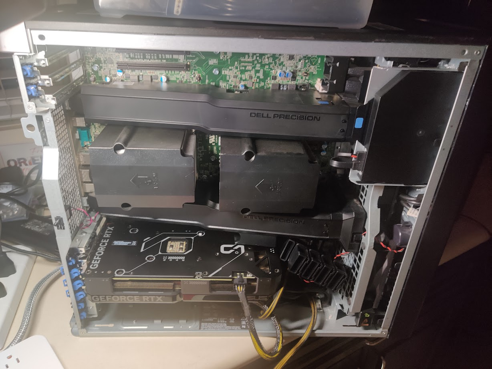

Building my own Server Part 1 — Hardware
Hardware
Selection
I wanted a machine for experimenting with devops and deep learning. That means plenty of ram, cpu, and a modest gpu.
I was very careful with my selection, and here is what I ended up with:
- Dell Precision Tower Server 7910, with 2X intel xeon E5 2687 v4. Came with 32 GB of ram.
- More memory, when added, I will get a total of 128 GB of ECC memory.
- Nvidia rtx 4070 GPU, 12 GB vram.
Building
Here is the inside of my server:
Anyway, I need to figure out where to put the GPU. The computer has several PCIe slots, and I want the fastest one.
Up top:
And below:

I need to figure out what each of these pcie ports is. What do the numbers and color mean?
To catalog them:
- Three black PCIe3x16 slots (all 75W)
- One blue PCIe3x16 75W + ext 225 w
- One black PCIe2x4 25 W
- One tan PCI slot
I think it is safe to assume that the color is related to wattage, not PCIe protocol. Since the computer comes with the necessary power plug that the nvidia gpu wants, it is safe to assume that any of the PCIe3x16 are optimal, although I will try to place the gpu in the best spot for cooling.
I found a forum post (wayback archive) where someone asked this exact question.
An unsourced answer replied that the blue pcie slot was the primary gpu slot, so since I only have one gpu, that is where I put it.
I found the manual for my system online, but it doesn’t seem to label each pci port in images.
I also did research into some youtube videos.
The important thing to note about the memory upgrading process is that the memory shroud (cover) does not interfere with other processes.
Anyway, I also did more research, attempting to find more manuals and whatnot.
Linked on this page I found a proper manual which gave visual instructions on how to do things like remove the memory shroud.
GPU
However, I am trying to add the gpu, so I can get monitor output, so I can run testing suites to ensure the computer is in proper working order.
The GPU, is inserted:


After plugging the gpu power in:

I can turn the machine on and get monitor output:
Next step is to run the system diagnostics on the memory I currently have. Thankfully, I have an extra keyboard I can connect it to.
Hard Drives
Now that I had the GPU installed I could get video output and see what the BIOS is saying. I installed two hard drives, and got an error: “Alert Hard drive not found”.
I decided to pause on the hard drives, and run the built in memory test. The memory, and cpu tests ran without error, however, I got an error about not being able to find the hard drives
Just to make sure that the issue was a hardware issue, and not the BIOS merely complaining about not seeing a bootable device, I booted into a live USB and ran lsblk:

I messed around with moving around the hard drive positions, unplugging and plugging in cables, no dice. This issue is definitely at the hardware level, however, and there are several causes:
- Bad cable. I only have a single cable, an SAS connector on both sides.
- No power to the hard drives. I will test to see if they light up later.
- Motherboard not working. Maybe the motherboard plug isn’t working, but I tried both of them…
It’s definitely not defective hard drives, as this happens with both of the hard drives I am testing with, both of which are new. However, they rely on the same cable and same power supply (they attatch to a seperate board which has a cable connecting that to the motherboard and another connecting it to the power supply)
Upon doing some further research, I found a related youtube video. According to this video, the port I am trying to attatch this to is controlled by the RAID controller, so RAID must be enabled, although I can use RAID 0 for RAID without any of the special RAID features or complications.
I enabled the RAID controller, and now the BIOS can see the hard drives:

However, when I actually inspect these drives via a live usb, they don’t appear to be mountable properly.

It sees the hard drives as 0 byte, empty drives, which I can’t do anything.
I need to get into the raid controller bios.
I found a relevant manual which says that when booting, pressing Control + I to enter the raid configuration screen.
I am wondering if there is an option to bypass raid entirely, as I have no need for any of it’s features, and striped will limit me to the size of the smallest disk.
Alright, since I skimmed the manual, I missed something. There are actually three different ways to get to the raid controller interface, depending on what raid controller you have installed. I tested all methods, but the only one that worked was entering the boot options menu, and then going to device configuration.
Then, I was met with a screen like this:

I browsed around a little bit, and although it could see the physical drives, there was no option to create a volume or do anything with the disks. I think this is because I have two different disks, an nvme SSD, and a sata HDD.
This is frustrating. I (might) need to buy another disk, or buy parts to make the disks work via a SATA connection.
I did more research and found a relevant support article (wayback machine) detailing how to use the raid controller and it seems I missed something. It’s seems that creating volume is not in the drives section, but rather in controller configuration.
Apparently, there is also a command line software designed to work with this raid controller (that works on linux, of course).
Relevant support page by broadcom
But I don’t really want to use raid. I just want to pass through the disks, or something like that. Upon doing some research, I might be able to put the card into Host Bus Adapter (HBA) mode. In this mode, it will just pass through the disks.
Based on some precursory research, this may not be an options in the settings that it comes with, and I may need to flash the firmware (wayback link)
Firmware flashing is scary. Unlike playing with operating systems, if done wrong, firmware flashing can brick (make useless) devices. So I will have to research very carefully.
So first, what is this “IT” mode I keep seeing when I research how to passthrough devices. IT mode stands for “initiator target” and it presents each drive individually to the host.
“IR” stands for integrated RAID, when raid is integrated into the motherboard. I don’t have this.
And finally, “HBA” stands for host bus adapter mode. Devices that do this (they can be more than just drive connectors) connect any other kind of device to the motherboard directly.
So I have to find the relevant “IT” firmware.
But first, I need out exactly what device I have.
According to the output of lspci, the controller is: 01:00.0 Serial Attached SCSI controller: Broadcom / LSI SAS3008 PCI-Express Fusion-MPT SAS-3 (rev 02)
I found a relevant youtube video which applies to my exact server model (T7910), but it doesn’t list where to find the files, and the flashing utility.
Based on some research, it seems that the SAS 3008 and the SAS 9300 HBA have the same hardware, just differing firmware. According to one article, “Supermicro LSI SAS3008 HBAs (which share the same controller as the LSI 9300-8i HBAs)”.
The drivers for this can be found on the broadcom website
I will need to do research into what the “phases” are. I think they are releases/versions? Anyway, I downloaded the P15 version, and I went through it. It appears to contain all the rom files that will be flashed to the device.
- SAS9300_8i_IT.bin
- mptsas3.rom
- mpt3x64.rom
However, this zip archive appears to only contain the windows flashing utilities. I need to find the linux flashing utility.
Alright, I’ve located the sas3flash binaries: broadcom website. Here, there are linux sas3flash binaries, as well as uefi binaries, which people seem to like, but I don’t really want to use as I don’t want to have to learn how to interact with the UEFI console, and attatched disks, and whatnot. I’d rather use the familer linux command line interface and tools.
Based on looking at sas3flash -help, I should be able to use the same commands as the uefi binary, following the instructions on the flash the firmware guide linked above.
I booted from a live usb, and attempted to flash the rom.
On the first step of flashing the firmware, wiping it, I get an error.
./sas3flash -c 0 -o -e 6 -l log7
Adapter Selected is a Avago SAS: SAS3008(C0)
Executing Operation: Erase Flash
Erasing Flash Region...
ERROR: Erase Flash Operation Failed!
Resetting Adapter...
Reset Successful!
Due to Exception Command not Executed. IOCStatus=0x47ca, IOCLogInfo=0x0
Finished Processing Commands Successfully.
Exiting SAS3Flash.I suspect this error is related to me not messing around with the jumper cables before hand, but I can’t find them.
I also can’t flash the IT firmware, and I am assuming this is because it requires that you wipe the firmware first.
./sas3flash -o -f SAS9300_8i_IT.bin -b mptsas3.rom -b mpt3x64.rom -l flashing.log
Adapter Selected is a Avago SAS: SAS3008(C0)
Executing Operation: Flash Firmware Image
Firmware Image has a Valid Checksum.
Firmware Version 16.00.10.00
Firmware Image compatible with Controller.
Valid NVDATA Image found.
NVDATA Major Version 0e.01
Checking for a compatible NVData image...
NVDATA Device ID and Chip Revision match verified.
NVDATA Versions Compatible.
Valid Initialization Image verified.
Valid BootLoader Image verified.
ERROR: Cannot Flash IT Firmware over IR Firmware!
Firmware Image Validation Failed!
Due to error remaining commands will not be executed.
Unable to Process Commands.
Exiting SAS3Flash.However, after doing some research, it appears that only the dos and efi versions of sas3flash are able to flash IT firmware over IR firmware, according to the official broadcom website. ON that site, there is a compatibility table, meaning I need to use the either the efi version, or the dos version. I should have noticed how the existing guides used either the efi version or the dos version.
So I set up a USB with the efi version of the flasher, and I attempted to get into the boot menu… only for it not to work. I press F12, or F8 then F12The screen says something along the lines of “Entering the one time boot configuration”, before taking me to the “cannot find hard drive” screen. I have no idea why it’s not working, as it has worked before.
According to one forum post, the issue has something to do with the CD Rom drive, and I should try removing it. However, that question and suggestion is relating to laptops, not workstations, so it might not work for me.
Okay, I figured out what the issue was. I had unplugged the drives, but when I plugged them back in, they were not seated properly, and that made them get confused.
Now that I could get to the boot menu, I could boot my sas3flash efi file. Except I couldn’t. It simply errored. I attempted to boot on it on my laptop to make sure that it was not an issue with the desktop and not the efi setup, and it errored there as well.
However, after I booted to a linux distro, I found that I could see the drives, independent of the raid controller. For whatever, reason, my flashing appears to have worked, even if it didn’t. Now that I have drives installed, I can finally begin to set up the software.
Memory
This comes with two 16 gb sticks, one in each cpu.
I bought 6 more 16 GB ecc sticks, so I will have a total of 128 GB of memory.
In order to ensure that dual channel works, I will need to put them in the right spots. Now, the previous manual that I found has a chart detailing on the channel configuration, but that chart is very complex. Lower down in the manual, in the “errors and warnings” section, there is a error that could appear that makes things very clear to me.
“Warning: Non-optimal memory population detected. For increased memory bandwidth populate DIMM connectors with white latches before those with black latches.”
That makes things very simple for me.
I added the ram. And now my system won’t boot at all. I don’t get any monitor output. I asked around, and someone mentioned that it could be dust in the ram socket cores, so I will have to take them out, blow the dust out, and then reseat the ram.
The same user helping me also said that it might be an issue with extreme memory profiles (xmp), a feature that adjusts how memory works on intel cpus, and that I should disable it from a working bios.
Okay, I figured out what the issue was. The issue was that I did not seat the memory properly.
Once I had set the memory, I ran the memory test built in to the bios, and after some time it finished without any errors.